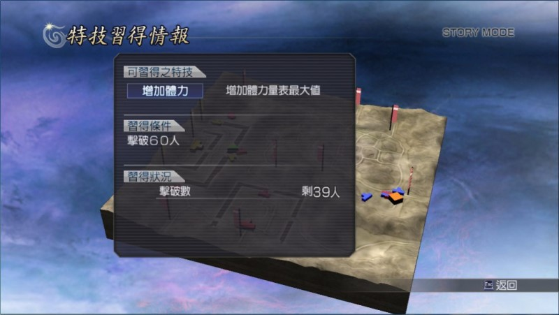

特技一覽
增加體力 增加體力量表最大值，每級 +16，共 20 級。
增加無雙 增加無雙量表最大值，每級 +8，共 20 級。
強化攻擊 提升攻擊力，每級 +11，共 20 級。
強化防禦 提升防禦力，每級 +16，共 20 級。
提升速度 提升敏捷度，每級 +8，共 20 級。
強化馬術 騎乘軍馬開始戰鬥、騎乘軍馬時強化能力，每級 +10，共 15 級。
提升運氣 運氣上升，每級 +10，共 15 級。
強化力型 強化力量攻擊類型的能力，每級 +2%，共 20 級。
強化速型 強化速度攻擊類型的能力，每級 +2%，共 20 級。
強化技型 強化技巧攻擊類型的能力，每級 +2%，共 20 級。
強化特殊 蓄力攻擊時的威力上升，每級 +2%，共 20 級。
強化必殺 無雙消費技的威力上升，每級 +2%，共 20 級。
經驗值增 增加獲得的經驗值，每級 +10%，共 20 級。
待命回復 待命時無雙值回復速度加快，每級 +3%，共 15 級。
減輕消耗 無雙消費技之消費量減少，每級 +2%，共 15 級。
連擊回復 連擊數超過 10 時回復體力，每級 +2.4，共 15 級。
回復體力 於戰鬥中緩慢回復體力，學滿每 10 秒恢復 7.75，共 15 級。
回復無雙 於戰鬥中緩慢增加無雙值，學滿每 10 秒恢復 8.5，共 15 級。
如何提升特技的等級？
以「馬術強化」為例，該技能總共 15 級，這表示整個遊戲總共有 15 位角色可以學會馬術強化這個特技。如果有 7 名角色學會馬術強化這個特技，那裝備特技裡面「馬術強化」的等級就是 7。
哪些角色可以學習哪些特技？
趙雲 增加體力 回復無雙 強化防禦 強化速型
關羽 強化攻擊 強化馬術 增加體力 強化力型
張飛 增加體力 強化力型 強化攻擊 回復無雙
諸葛亮 強化必殺 強化特殊 增加無雙 減輕消耗
劉備 強化防禦 強化速型 強化馬術 －－－－
馬超 強化攻擊 提升速度 強化馬術 強化力型
黄忠 回復體力 增加無雙 強化速型 －－－－
姜維 強化攻擊 強化技型 強化必殺 待命回復
魏延 強化技型 提升速度 回復無雙 －－－－
龐統 增加無雙 強化技型 強化必殺 減輕消耗
月英 強化速型 強化必殺 減輕消耗 強化防禦
關平 增加體力 強化力型 經驗值增 －－－－
星彩 強化技型 提升速度 回復無雙 強化防禦
夏侯惇 增加體力 連擊回復 強化技型 強化攻擊
典韋 增加體力 強化攻擊 強化速型 經驗值增
許褚 提升運氣 增加體力 強化力型 回復無雙
曹操 增加無雙 經驗值增 強化技型 －－－－
夏侯淵 強化力型 強化必殺 增加體力 回復體力
張遼 強化馬術 強化力型 增加無雙 強化攻擊
司馬懿 強化技型 強化必殺 減輕消耗 －－－－
徐晃 回復無雙 增加無雙 增加體力 －－－－
張郃 提升速度 強化技型 連擊回復 －－－－
甄宓（甄姫） 增加無雙 強化技型 回復體力 －－－－
曹仁 強化防禦 強化特殊 待命回復 －－－－
曹丕 強化防禦 經驗值增 強化特殊 強化速型
龐德 強化攻擊 強化力型 經驗值增 強化必殺
周瑜 連擊回復 增加無雙 強化速型 強化必殺
陸遜 提升速度 強化速型 強化必殺 減輕消耗
太史慈 增加體力 強化攻擊 強化特殊 經驗值增
孫尚香 提升速度 連擊回復 增加無雙 強化技型
孫堅 強化攻擊 經驗值增 強化特殊 －－－－
孫權 強化力型 強化防禦 經驗值增 強化必殺
呂蒙 強化特殊 強化必殺 經驗值增 －－－－
甘寧 強化必殺 強化技型 提升速度 連擊回復
黄蓋 強化攻擊 強化防禦 強化力型 經驗值增
孫策 強化防禦 強化力型 強化必殺 經驗值增
大喬 提升速度 強化速型 待命回復 －－－－
小喬 強化技型 提升運氣 回復無雙 －－－－
周泰 增加體力 提升速度 強化技型 待命回復
凌統 提升速度 強化技型 連擊回復 提升運氣
貂蟬 增加無雙 強化速型 回復體力 －－－－
呂布 增加體力 強化攻擊 強化馬術 強化力型
董卓 增加體力 強化力型 待命回復 －－－－
袁紹 強化速型 強化防禦 經驗值增 提升運氣
張角 提升運氣 回復體力 強化速型 －－－－
孟獲 強化力型 增加體力 提升運氣 經驗值增
祝融 強化攻擊 強化力型 強化必殺 減輕消耗
左慈 經驗值增 強化攻擊 增加無雙 強化技型
遠呂智 強化特殊 經驗值增 回復無雙 －－－－
妲己 強化防禦 連擊回復 強化特殊 －－－－
太公望 強化馬術 提升運氣 待命回復 －－－－
孫悟空 減輕消耗 連擊回復 回復體力 －－－－
伏犠 回復無雙 強化馬術 提升運氣 －－－－
女媧 待命回復 減輕消耗 連擊回復 －－－－
源義經 回復體力 回復無雙 強化馬術 －－－－
平清盛 提升運氣 待命回復 減輕消耗 －－－－
卑彌呼 連擊回復 回復體力 －－－－ －－－－
百百目鬼 －－－－ －－－－ －－－－ －－－－
牛鬼 －－－－ －－－－ －－－－ －－－－
真．遠呂智 －－－－ －－－－ －－－－ －－－－
弁慶 強化攻擊 強化必殺 強化力型 －－－－
三藏法師 增加無雙 強化速型 強化攻擊 －－－－
真田幸村 強化攻擊 強化防禦 強化速型 連擊回復
前田慶次 強化攻擊 強化馬術 強化力型 －－－－
織田信長 強化特殊 強化防禦 經驗值增 增加無雙
明智光秀 強化馬術 提升速度 強化防禦 強化技型
石川五右衛門 增加體力 強化力型 強化必殺 回復體力
上杉謙信 強化必殺 強化力型 強化防禦 經驗值增
阿市（お市） 增加無雙 待命回復 強化速型 －－－－
阿國 增加無雙 強化速型 提升運氣 回復體力
女忍（くのいち） 提升速度 強化特殊 回復體力 －－－－
雜賀孫市 待命回復 強化速型 提升運氣 －－－－
武田信玄 強化防禦 經驗值增 增加體力 強化特殊
伊達政宗 提升速度 回復體力 強化技型 －－－－
濃姫 強化技型 提升速度 回復體力 －－－－
服部半藏 增加無雙 待命回復 提升速度 強化速型
森蘭丸 強化特殊 增加體力 回復無雙 強化必殺
豐臣秀吉 提升運氣 強化速型 提升速度 經驗值增
今川義元 增加無雙 強化馬術 強化特殊 －－－－
本多忠勝 強化力型 增加體力 強化防禦 經驗值增
稻姫 強化防禦 強化特殊 待命回復 －－－－
德川家康 強化馬術 強化特殊 強化防禦 強化必殺
石田三成 減輕消耗 強化技型 增加體力 增加無雙
淺井長政 強化必殺 減輕消耗 提升速度 強化特殊
島左近 強化防禦 減輕消耗 強化特殊 －－－－
島津義弘 強化馬術 強化攻擊 增加體力 －－－－
立花誾千代 提升速度 增加無雙 強化特殊 回復無雙
直江兼續 增加無雙 強化特殊 減輕消耗 －－－－
寧寧（ねね） 提升速度 提升運氣 強化技型 待命回復
風魔小太郎 提升速度 強化特殊 連擊回復 －－－－
宮本武藏 強化攻擊 強化速型 連擊回復 －－－－
前田利家 回復無雙 強化馬術 提升運氣 －－－－
長宗我部元親 待命回復 減輕消耗 連擊回復 －－－－
加西亞（ガラシャ） 回復體力 回復無雙 強化馬術 －－－－
佐佐木小次郎 提升運氣 待命回復 減輕消耗 －－－－
柴田勝家 連擊回復 回復體力 回復無雙 －－－－
特技怎麼練？
只要把角色加入隊伍，進入關卡後在選單選擇：
「隊伍情報」→「角色」→「特技習得情報」
遊戲就會告訴你這名角色要在關卡中達成哪些條件：

畫面顯示，在這關卡中擊破 60 人，就能滿足「增加體力」這項特技的學習條件。值得注意的是，畫面中最下方的「習得狀況」會顯示你離目標還剩多少條件。
完成之後，必須過關才能學會特技。
既然過關才能學會特技，也就表示單一角色一次只能學習一個特技（單場三個角色加起來能學到三個特技），想學下一階段的特技就必須再打一場。
因為並沒有要求難度，所以練特技時難度選「容易」較快。
適合練特技的關卡
適合團隊安心練特技的關卡
想快速練滿特技，最重要的是「保證能過關」，其次是「敵將與小兵都要多」。
「本傳」的「蜀 3 章．成都之戰」就是符合這些條件的關卡，相當適合把新加入的角色帶去練特技。
這個關卡的失敗條件是「魏延被擊破」，但他是第三方勢力，而且通常只待在原地不動，可說不會死。所以在不用擔心我方主帥被擊破，也不用擔心本陣淪陷的情況下，打起來相當安心。除非玩家自己掛掉了，否則保證能過關。
接著，這個關卡的敵將總共有 19 名，小兵稍微認真一些些打的話 800 不是問題，數量算很足了！一次帶三名角色進去練特技應該都能滿足條件。除非這三名角色的習得條件都是 6 分鐘內打倒 8 名敵將，但我從沒碰過這種組合，如果碰到就更換其中一名隊員吧。
此外這個關卡還有個優點，過關條件很簡單，直接擊破袁紹，再擊破妲己就行了。當每位角色的特技都習得，就可以直接過關，換學下一個特技，相當迅速。
缺點是，雖然這個關卡難度才一星，但新加入的角色等級 1 時，在這個關卡打起來其實有點棘手，等級 3 以前需要小心應戰，因為這關原本是二星級難度，到了 Z 才改為一星級。
適合團隊快刷特技的關卡
如果想更快刷特技，三人習得就想馬上結束這場作戰，那我推薦「本傳」的「戰 3 章外傳．下邳之戰」。
這個關卡敵將 18 名，小兵稍微認真一些些打的話約 600 上下，特技習得就馬上殺向曹仁，相當快速。
雖然失敗條件為：「主帥敗退、本陣淪陷、陸遜敗退。」但其實我方幾乎不可能被攻陷，因為敵方被牽制在兩個入口處，可能要花 30 分鐘才能攻入主帥與本陣，而主帥是織田信長，電腦想解決他沒那麼容易。而當你殺向曹仁時，那些攻擊本陣的敵方武將還會撤退，相當安全。
比較危險的是陸遜的部份，不過，在你與他會合後，他會往本陣撤退，所以也沒那麼快死。真怕他掛掉的話，可以先把張遼那邊的武將擊破，陸遜撤退的路線就變安全了。
整體來講，除非超過 30 分鐘，否則不太會失敗，而我們目的是速刷，通常 5 分鐘左右就結束一場，所以其實還是非常安全的，節奏比「蜀 3 章．成都之戰」暢快一倍，而且整體難度也較低（雖然標示 2 星），等級 1 的角色進去也不會覺得危險，相當值得推薦！
單一角色速刷特技的關卡
玩到「魔王再臨」後，幾乎所有角色都練完特技，偶爾才會加入一名全新的角色，這時就不需要兵將夠多的關卡，只要能快速過關即可。
這時推薦「本傳」的「吳 2 章外傳．常山之戰」，往明智光秀殺過去，沿路就能滿足條件。之所以快速，是因為地圖很小，而且直接就能往明智光秀殺去過關，一場可能不用兩分鐘就解決了。
檢視學過的特技
這遊戲無法檢視究竟誰學過哪些特技。
但是，「畫廊」的「桌布一覽」，每位角色的第二張桌布出現條件：習得所有特技，因此可用這張桌布出現與否做為依據，檢視還有誰沒練完特技。